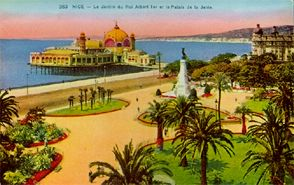

Fourteen numbered items (though the box states that this issue comprises fifteen sections, section number 15 apparently does not exist); no advertisements. Edited by Mario Amaya, designed by John Kosh. Published Spring-Summer 1970 by Roaring Fork Press, NYC.
The second of an unending series
Two-fold screen, ink and colors on paper, H. 57 7/8 in., W. 65 1/8 in. From the collection of the Metropolitan Museum of Art, New York, Fletcher Fund, 1927.
""The Japanese feeling for nature is obvious here as is Korin's ability to transform it into a rhythmic bold stylization. The design is really the abstract essence of a wave and Korin expresses this imaginative design with supremely controlled brushwork.
Eduardo Paolozzi
Original format: 8 page booklet, 9-1/2 inches square.
Date: Time: Location Area: Facilities: Sunday, July 23, 1967 4:30 P.M. (P.S.T.) Century City; 1800 Avenue of the Stars, Los Angeles 631' wide x 517' high 944 Parking slots 4 night lamps 2 entrance - exits